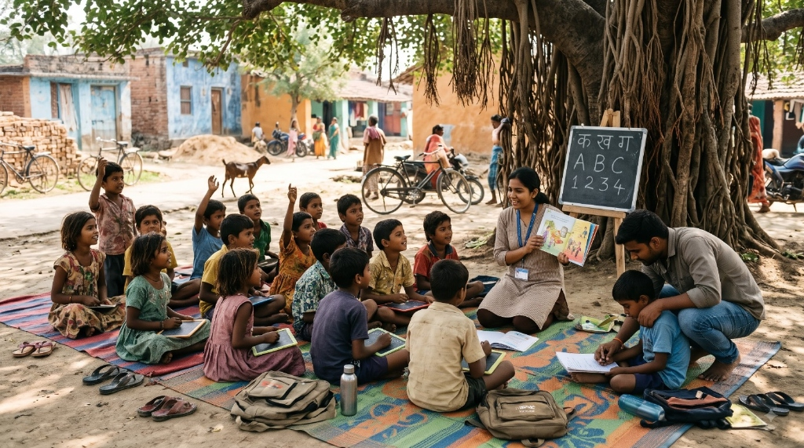
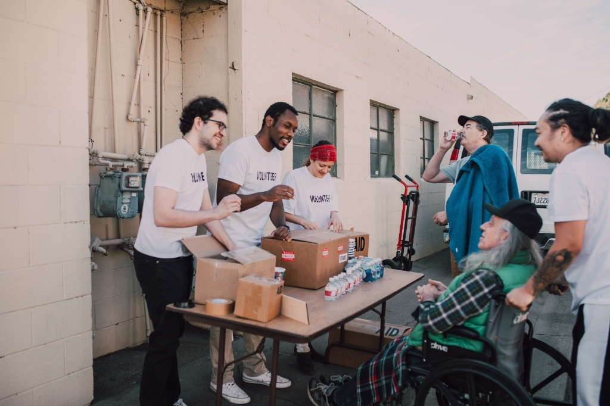
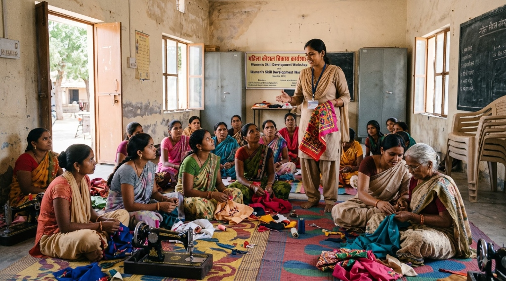

NGO & Non-Profit Solutions Empowering Missions & Social Impact Through Digital Reach
Non-governmental organizations (NGOs) play an important role in creating positive social change, supporting communities, and addressing important challenges. To achieve their goals, NGOs need effective ways to communicate their mission, reach supporters, manage campaigns, and organize information. The right digital solutions can help organizations connect with more people and make their work easier to discover.
At TRISET Solutions, we help NGOs and non-profit organizations strengthen their digital presence through website development, digital marketing, content creation, data processing, and customized digital solutions. Our goal is to help organizations communicate their purpose clearly, engage their audiences, and build a stronger foundation for their initiatives.

Comprehensive Capabilities
Digital Solutions for NGOs and Non-Profit Organizations
Whether raising vital funds, organizing volunteers, or documenting field outcomes, our digital services are designed around your mission and community priorities.
Mission-Led Website Development for NGOs
A well-designed website helps an NGO explain its mission, showcase its activities, and build trust with donors, volunteers, and community members. It provides a central place where visitors can learn about ongoing projects, explore impact stories, and understand how they can contribute.
Our website development services focus on creating user-friendly, mobile-responsive websites that present information clearly. With SEO-friendly content and clear structure, your organization improves visibility so people searching for relevant causes can discover your work.
- Mission statements, project galleries & impact stories
- Donation gateway integration & tax exemption transparency
- Volunteer registration & community enquiry forms
- Mobile-first, fast-loading, and accessible design
Campaign & Donor Engagement Solutions
Successful campaigns depend on clear communication and convenient ways for people to participate. Whether promoting a community initiative, organizing a fundraising campaign, or encouraging volunteer participation, a well-planned digital journey guides supporters towards meaningful action.
TRISET Solutions helps organizations promote campaigns through dedicated landing pages, social media marketing, SEO, and paid digital advertising. We explain how people can help and create straightforward paths for visitors to take the next step.
- High-conversion fundraising & campaign landing pages
- Targeted social media promotion & Google Ad Grants support
- Donor communication journeys & recurring contribution workflows
- Real-time campaign tracking & participation analytics
Content Creation & Community Outreach
Consistent communication helps NGOs maintain relationships with supporters and share the progress of their initiatives. Website articles, social media posts, campaign creatives, and project updates communicate an organization's work in an authentic, engaging way.
Our digital marketing services support content planning, social media management, SEO, and online campaign promotion. We help organizations communicate their objectives, highlight community activities, and share meaningful grassroots stories with the right audiences.
- Authentic storytelling & grassroots beneficiary features
- Social media content calendars & volunteer advocacy
- Email newsletters & quarterly impact progress updates
- Multimedia creative assets for seasonal & emergency appeals
Data Organization & Reporting Support
NGOs manage sensitive information related to beneficiaries, volunteers, projects, donations, and community programmes. Keeping these records organized is important for administrative efficiency and programme reporting.
TRISET Solutions provides data processing services, including data entry, data cleansing, data conversion, and document digitization. These services organize information into structured formats that are easier to maintain, access, and report to stakeholders and regulatory bodies.
- Beneficiary records digitization & survey data entry
- Donor database cleaning, deduplication & management
- Grant reporting documentation & audit-ready record formats
- Strict data privacy protection & confidential processing
Community Volunteers in Action
Connecting People with Causes That Matter
Every NGO has different priorities, resources, and community objectives. We take a practical approach by understanding your requirements and identifying digital services that align with your grassroots initiatives.
By bringing together website development, digital marketing, and data processing, TRISET Solutions helps organizations address multiple digital needs through one dedicated service partner.
- Volunteer Coordination Portals
- Relief Camp Information Hubs
- Donation Tracking Dashboards
- Field Team Activity Logs
- Multilingual Community Pages
- Secure Donor Verification

Grassroots Empowerment
Showcase Real-World Change & Vocational Impact
Donors and institutional partners want to see clear evidence of lasting social impact. Highlighting grassroots vocational programmes, self-help groups, and skill workshops builds immense trust and donor confidence.
We help you document and share these inspiring stories of community resilience through responsive project galleries, verified beneficiary statistics, and compelling campaign materials.
- Vocational Training Showcases
- Micro-Grant Documentation
- Skill Development Enrollment
- Outcome Measurement Reports
- CSR Partner Presentations
- Direct Supporter Updates

Organizations We Support
Tailored for Every Social Mission
Whether your organization operates locally in one district or oversees international developmental aid, our digital tools scale to meet your needs.
Community Aid & Welfare Trusts
Donor-friendly websites, food & clothing drive promotion, emergency appeal landing pages, and volunteer registrations.
Child Education Foundations
Scholarship program pages, student sponsorship workflows, annual school impact reports, and transparent fund allocation dashboards.
Skill & Livelihood Initiatives
Vocational training course listings, artisan product showcases, self-help group stories, and CSR partnership proposals.
Healthcare & Relief Societies
Free medical camp schedules, patient assistance directories, donor support forms, and crisis relief tracking systems.
Our Commitment
Why Choose TRISET Solutions?
We take pride in supporting organizations that make a genuine difference. Our practical, compassionate approach ensures your resources are maximized for real community impact.
🌱 Mission-First Approach
We take time to understand your cause, community context, and donor expectations to craft genuine, emotionally resonant digital experiences.
🧩 Complete Digital Capability
Website design, digital marketing campaigns, creative content, and back-office data processing handled cohesively by one trusted partner.
🛡️ Ethical & Transparent
Respectful handling of beneficiary privacy, secure data protection, and transparent digital execution that honors donor trust.
Let's Make Your Mission Reach Further
Let's Make Your Mission Reach Further
Whether you want to build a professional NGO website, promote a social initiative, improve community outreach, or organize project information, TRISET Solutions is ready to help.
Let's discuss your requirements and explore digital solutions that help your organization communicate its mission and reach more people.